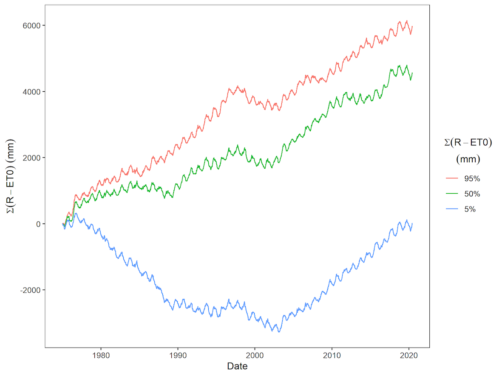

It rains often in Belgium, yet we are high (23rd!) on the world ranking of regions with water stress (WRI, 2018) Belgium’s ranking is 23rd of 164 countries in the category 'high risk of water stress'(WRI, 2018), i.e. high risk of situations where not all water users can still get enough water to meet their demand. Flanders is particularly vulnerable to drought due to its high population density and a lot of agriculture and industry. The deep groundwater in Flanders has already been heavily used in the past and is only very slowly replenished. It is therefore not a good idea to keep pumping it up. There are also few large rivers in Flanders that supply a lot of water. If the superficial aquifers are not replenished sufficiently due to successive dry summers, our high water demand will come under pressure.
Moreover, water stress is not the same everywhere in Flanders. Demand depends on the sectors and activities present, while supply depends on the hydrology of a region and the microclimate. As you can see in the map below that shows the evolution of the hydrological precipitation deficit in Flanders in 2019, there are regional differences.

There is now scientific consensus that more weather extremes will occur in Flanders in the future. So there will not necessarily be less water falling from the sky, but that water will be distributed less evenly throughout the year. We will therefore have to deal with both wetter and drier periods. We can therefore expect that in the future there will be even more pressure on our water system, because the demand for water will increase even more during dry periods. The figure below shows the hydrological precipitation deficit (= precipitation - evapotranspiration) of the last 45 years. Each year, the counter is set to 0 on 1 April, the start of the hydrological season. The bars at the bottom indicate the statistical return periods. This way you can see how 'exceptional' a year is compared to other years. The last 4 years have been very dry, but dry years did occur earlier as well.

However, it is interesting to add up the hydrological precipitation deficit over the years. As you already saw, there are regional differences that clearly persist here. Nevertheless, there is clearly an upward trend in both the wetter and drier regions of Flanders over the last 10 years.
Would you like up-to-date information about drought? Then be sure to surf to opdehoogtevandroogte.be!
Agriculture is certainly not the largest water consumer in Flanders, but it is an important consumer of groundwater. Agriculture and nature are therefore also extra vulnerable to drought, especially in the future as the climate changes. Until now, farmers relied heavily on rainwater supplemented with superficial groundwater. If they can no longer irrigate sufficiently due to water shortages, in many cases a large part of their income will be at risk.